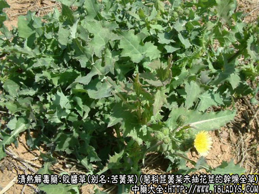
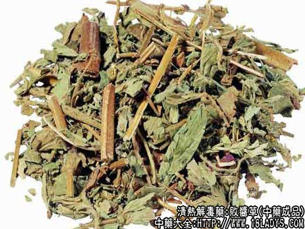
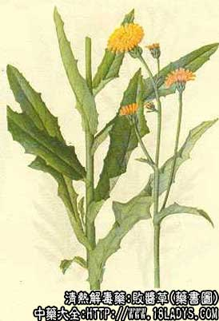

败酱草为常用中药，始载《神农本草经》。现市售商品主要有两大类。华北、西北等北方地区及京津两市习用为菊科植物苣荬菜及同属数种植物的全草作败酱用。江南地区习用品为十字花科菥蓂作败酱用。这两种败酱均与古籍本草记述的品种不同，据考证《本草》所指败酱应为败酱科植物白花败酱及其同属黄花败酱等的全草，此种败酱现只少数地区使用。
1、苣荬菜
别名：苦菜、苦荬菜、苣菜。
来源：为菊科多年生宿根草本植物苣荬菜及其同属额未抽花茎的干燥全草，野生。
产地：主产于华北、东北、西北等地区，其它各地亦有分布。
植物形态：宿根草本，全体含白色浆汁。根茎多匍匐横生，直径约会2～5毫米，老根茎表皮灰黄色，新生根茎白色。地上茎单一直立。叶互生，长圆形披针形。基部呈耳状抱茎先端钝，中脉显著，边缘有稀疏缺刻或羽状浅裂及尖疏锯齿。头状花序顶生单一或呈伞房状，花黄色，花冠舌状。总苞钟状。瘦果，长椭圆形，具纵肋，冠毛银白细软。
性状鉴别：根茎长圆柱形，长3～10厘米，浅黄棕色，有纵皱纹，上部有类节状的叶基痕。顶端有短茎及数片或十数片皱缩的叶片，叶片灰绿色。气味，味苦。
以叶片茂密灰绿色，无茎枝者为佳。
主要成分：苣荬菜含胆碱、苦味素、脂肪油。黄花败酱含多种皂甙。
药理作用：清热祛瘀。体外试验对金黄色葡萄球菌有抑菌作用。
炮制：切咀，生用。
性味：苦寒。
归经：入胃、大肠、肝经。
功能：清热解毒，活血散瘀排脓。
主治：肠痈、肺痈，急性菌痢，急性咽炎，急性阑尾炎等症。
临床应用：主要用于治疗急性阑尾炎。古方早已用薏苡附子败酱散（《金匮要略》方）治疗肠痈。现代在此方基础上加减，配用清热凉血药等，加强消炎作用，治疗阑尾周围炎和阑尾脓肿，效果较好，方如肠痈方。
使用注意：过量服用败酱草有时会引起头昏、恶心和白细胞数暂时性减少等反应。
用量：9～30g。
处方举例：肠痈方：败酱草15g、生薏苡仁15g、冬瓜仁15g、桃仁6g、丹皮9g、银花15g、连翘9g、秦皮6g、紫花地丁15g、延胡索6g，水煎，每天一剂分二次服。
2、菥蓂
别名：瓜子草。
来源：为十字花科一年生草本植物菥蓂带有近成熟短角果的干燥茎枝。多为野生。
产地：主产于华东、中南地区，其它各地多有分布。
性状鉴别：全株黄绿色，茎圆柱形，多分枝全长约20～30厘米。叶绿色皱缩多脱落。果序成总状。果实扁片卵圆形，状如榆钱。有细柄，柄长约1厘米。角果内含棕褐色卵圆形种子十余枚，种子长约2毫米，表面有突起的同心环纹。气微，味淡。
以全株黄绿色，带有多数果实者为佳。
性味：苦微温。
归经：入肝经。
功能：清肝明目，和中益气。
主治：目赤、肿痛、泪出。
注：据《中药鉴别手册》记述，除以上两种不同科属的败酱外，有少数地区，如东北、内蒙、山东、云南等部分地区，使用败酱植物白花或黄花等数种败酱。综上所述败酱来源复杂。但据临床应用认为菊科败酱及败酱科败酱疗效相似，均有清热解毒散瘀排脓功用，对急性阑尾炎有显效，但科属不同应分别定名，不宜统称败酱。十字花科菥蓂功能与败酱不同，历代《本草》均有记述，不应再称败酱。
以上为败酱草图片以及败酱草的功效与作用，如果您想了解更多关于败酱草，请往下看。